7. Xarray Interpolation, Groupby, Resample, Rolling, and Coarsen#
Attribution: This notebook is a revision of the Xarray Interpolation, Groupby, Resample, Rolling, and Coarsen notebook by Ryan Abernathey from An Introduction to Earth and Environmental Data Science. Thanks to Aiyin Zhang for preparing this notebook.
In this lesson, we cover some more advanced aspects of xarray.
You can access this notebook (in a Docker image) on this GitHub repo.
import numpy as np
import xarray as xr
from matplotlib import pyplot as plt
7.1. Interpolation#
In the previous lesson on xarray, we learned how to select data based on its dimension coordinates and align data with dimension different coordinates.
But what if we want to estimate the value of the data variables at different coordinates.
This is where interpolation comes in.
# we write it out explicitly so we can see each point.
x_data = np.array([0, 1, 2, 3, 4, 5, 6, 7, 8, 9, 10])
f = xr.DataArray(x_data**2, dims=['x'], coords={'x': x_data})
f
<xarray.DataArray (x: 11)> Size: 88B array([ 0, 1, 4, 9, 16, 25, 36, 49, 64, 81, 100]) Coordinates: * x (x) int64 88B 0 1 2 3 4 5 6 7 8 9 10
f.plot(marker='o')
[<matplotlib.lines.Line2D at 0x146e902d0>]
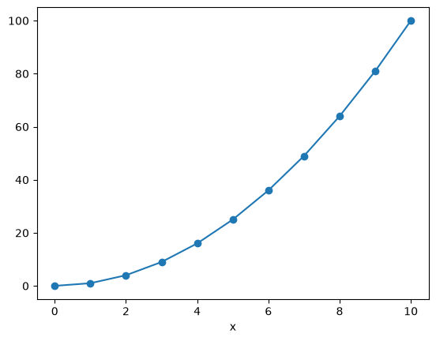
f.sel(x=3)
<xarray.DataArray ()> Size: 8B
array(9)
Coordinates:
x int64 8B 3We only have data on the integer points in x. But what if we wanted to estimate the value at, say, 4.5?
f.sel(x=4.5)
---------------------------------------------------------------------------
KeyError Traceback (most recent call last)
File ~/Desktop/xarray-tutorial/.pixi/envs/default/lib/python3.13/site-packages/pandas/core/indexes/base.py:3641, in Index.get_loc(self, key)
3640 try:
-> 3641 return self._engine.get_loc(casted_key)
3642 except KeyError as err:
File pandas/_libs/index.pyx:168, in pandas._libs.index.IndexEngine.get_loc()
--> 168 'Could not get source, probably due dynamically evaluated source code.'
File pandas/_libs/index.pyx:176, in pandas._libs.index.IndexEngine.get_loc()
--> 176 'Could not get source, probably due dynamically evaluated source code.'
File pandas/_libs/index_class_helper.pxi:70, in pandas._libs.index.Int64Engine._check_type()
---> 70 'Could not get source, probably due dynamically evaluated source code.'
KeyError: 4.5
The above exception was the direct cause of the following exception:
KeyError Traceback (most recent call last)
File ~/Desktop/xarray-tutorial/.pixi/envs/default/lib/python3.13/site-packages/xarray/core/indexes.py:878, in PandasIndex.sel(self, labels, method, tolerance)
877 try:
--> 878 indexer = self.index.get_loc(label_value)
879 except KeyError as e:
File ~/Desktop/xarray-tutorial/.pixi/envs/default/lib/python3.13/site-packages/pandas/core/indexes/base.py:3648, in Index.get_loc(self, key)
3647 raise InvalidIndexError(key) from err
-> 3648 raise KeyError(key) from err
3649 except TypeError:
3650 # If we have a listlike key, _check_indexing_error will raise
3651 # InvalidIndexError. Otherwise we fall through and re-raise
3652 # the TypeError.
KeyError: 4.5
The above exception was the direct cause of the following exception:
KeyError Traceback (most recent call last)
Cell In[5], line 1
----> 1 f.sel(x=4.5)
File ~/Desktop/xarray-tutorial/.pixi/envs/default/lib/python3.13/site-packages/xarray/core/dataarray.py:1729, in DataArray.sel(self, indexers, method, tolerance, drop, **indexers_kwargs)
1613 def sel(
1614 self,
1615 indexers: Mapping[Any, Any] | None = None,
(...) 1619 **indexers_kwargs: Any,
1620 ) -> Self:
1621 """Return a new DataArray whose data is given by selecting index
1622 labels along the specified dimension(s).
1623
(...) 1727 Dimensions without coordinates: points
1728 """
-> 1729 ds = self._to_temp_dataset().sel(
1730 indexers=indexers,
1731 drop=drop,
1732 method=method,
1733 tolerance=tolerance,
1734 **indexers_kwargs,
1735 )
1736 return self._from_temp_dataset(ds)
File ~/Desktop/xarray-tutorial/.pixi/envs/default/lib/python3.13/site-packages/xarray/core/dataset.py:3073, in Dataset.sel(self, indexers, method, tolerance, drop, **indexers_kwargs)
3069 Tutorial material on basics of indexing
3070
3071 """
3072 indexers = either_dict_or_kwargs(indexers, indexers_kwargs, "sel")
-> 3073 query_results = map_index_queries(
3074 self, indexers=indexers, method=method, tolerance=tolerance
3075 )
3076
File ~/Desktop/xarray-tutorial/.pixi/envs/default/lib/python3.13/site-packages/xarray/core/indexing.py:219, in map_index_queries(obj, indexers, method, tolerance, **indexers_kwargs)
217 results.append(IndexSelResult(labels))
218 else:
--> 219 results.append(index.sel(labels, **options))
221 merged = merge_sel_results(results)
223 # drop dimension coordinates found in dimension indexers
224 # (also drop multi-index if any)
225 # (.sel() already ensures alignment)
File ~/Desktop/xarray-tutorial/.pixi/envs/default/lib/python3.13/site-packages/xarray/core/indexes.py:880, in PandasIndex.sel(self, labels, method, tolerance)
878 indexer = self.index.get_loc(label_value)
879 except KeyError as e:
--> 880 raise KeyError(
881 f"not all values found in index {coord_name!r}. "
882 "Try setting the `method` keyword argument (example: method='nearest')."
883 ) from e
885 elif label_array.dtype.kind == "b":
886 indexer = label_array
KeyError: "not all values found in index 'x'. Try setting the `method` keyword argument (example: method='nearest')."
Interpolation to the rescue!
f.interp(x=4.5)
<xarray.DataArray ()> Size: 8B
array(20.5)
Coordinates:
x float64 8B 4.5Interpolation uses scipy.interpolate under the hood. There are different modes of interpolation.
f.interp(x=4.5, method='linear').values
array(20.5)
f.interp(x=4.5, method='nearest').values
array(16.)
f.interp(x=4.5, method='cubic').values
array(20.25)
We can interpolate to a whole new set of coordinates at once:
x_new = x_data + 0.5
f_interp_linear = f.interp(x=x_new, method='linear')
f_interp_cubic = f.interp(x=x_new, method='cubic')
f.plot(marker='o', label='original')
f_interp_linear.plot(marker='o', label='linear')
f_interp_cubic.plot(marker='o', label='cubic')
plt.legend()
<matplotlib.legend.Legend at 0x14703b4d0>
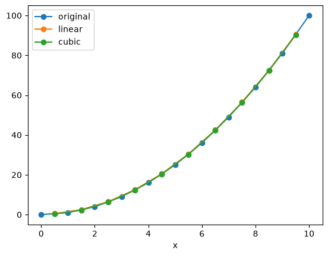
Note that values outside of the original range are not supported:
f_interp_cubic.values
array([ 0.25, 2.25, 6.25, 12.25, 20.25, 30.25, 42.25, 56.25, 72.25,
90.25, nan])
Note
You can apply interpolation to any dimension, and even to multiple dimensions at a time.
(Multidimensional interpolation only supports mode='nearest' and mode='linear'.)
But keep in mind that xarray has no built-in understanding of geography.
If you use interp on lat / lon coordinates, it will just perform naive interpolation of the lat / lon values.
More sophisticated treatment of spherical geometry requires another package such as xesmf.
7.2. Loading Data from NetCDF Files#
NetCDF (Network Common Data Format) is the most widely used format for distributing geoscience data. NetCDF is maintained by the Unidata organization.
Below we quote from the NetCDF website:
NetCDF (network Common Data Form) is a set of interfaces for array-oriented data access and a freely distributed collection of data access libraries for C, Fortran, C++, Java, and other languages. The netCDF libraries support a machine-independent format for representing scientific data. Together, the interfaces, libraries, and format support the creation, access, and sharing of scientific data.
NetCDF data is:
Self-Describing. A netCDF file includes information about the data it contains.
Portable. A netCDF file can be accessed by computers with different ways of storing integers, characters, and floating-point numbers.
Scalable. A small subset of a large dataset may be accessed efficiently.
Appendable. Data may be appended to a properly structured netCDF file without copying the dataset or redefining its structure.
Sharable. One writer and multiple readers may simultaneously access the same netCDF file.
Archivable. Access to all earlier forms of netCDF data will be supported by current and future versions of the software.
xarray is designed to make reading netCDF files in python as easy, powerful, and flexible as possible. (See xarray netCDF docs for more details.)
Below we download and load some the NASA GISSTemp global temperature anomaly dataset. The original file is located at https://data.giss.nasa.gov/pub/gistemp/gistemp1200_GHCNv4_ERSSTv5.nc.gz.
import pooch
gis_temp_url = 'https://data.giss.nasa.gov/pub/gistemp/gistemp1200_GHCNv4_ERSSTv5.nc.gz'
gis_temp_file = pooch.retrieve(
gis_temp_url,
processor=pooch.Decompress(),
known_hash="6a597332bcefbe0fbe5a6ce7677a9012fa766cc43cea291d6207c12db2fe0cc6"
)
gis_temp = xr.open_dataset(gis_temp_file)
gis_temp
<xarray.Dataset> Size: 114MB
Dimensions: (time: 1760, nv: 2, lat: 90, lon: 180)
Coordinates:
* time (time) datetime64[ns] 14kB 1880-01-15 1880-02-15 ... 2026-08-15
* lat (lat) float32 360B -89.0 -87.0 -85.0 -83.0 ... 85.0 87.0 89.0
* lon (lon) float32 720B -179.0 -177.0 -175.0 ... 175.0 177.0 179.0
Dimensions without coordinates: nv
Data variables:
time_bnds (time, nv) datetime64[ns] 28kB ...
tempanomaly (time, lat, lon) float32 114MB ...
Attributes:
title: GISTEMP Surface Temperature Analysis
institution: NASA Goddard Institute for Space Studies
source: http://data.giss.nasa.gov/gistemp/
Conventions: CF-1.6
history: Created 2026-09-08 02:31:15 by SBBX_to_nc 2.0 - ILAND=1200,...gis_temp.tempanomaly.isel(time=-1).plot()
plt.show()
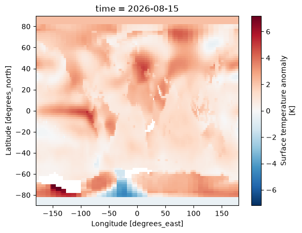
gis_temp.tempanomaly.mean(dim=('lon', 'lat')).plot()
plt.show()
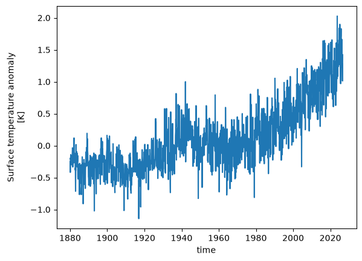
Let’s visualize the temperature anomally for the grid near Worcester. (Worcester’s coordinates: latitude: 42.2626; longtitude: -71.8023)
gis_temp.tempanomaly.sel(lat=42.2626, lon=-71.8023, method='nearest').plot()
plt.show()
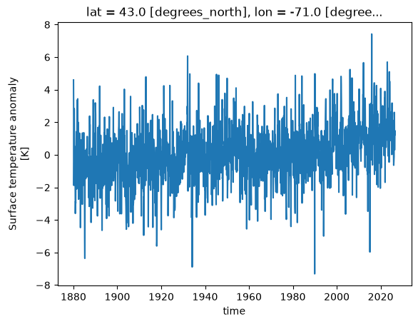
Note that you need to define method since the corresponding values for Worcester latitude and longitude do not exist in the DataArray’s coordinates.
7.3. Groupby#
xarray copies pandas' very useful groupby functionality, enabling the “split / apply / combine” workflow on xarray DataArrays and Datasets. In the first part of the lesson, we will learn to use groupby by analyzing sea-surface temperature data.
First we load a dataset. We will use the NOAA Extended Reconstructed Sea Surface Temperature (ERSST) v5 product, a widely used and trusted gridded compilation of historical data going back to 1854.
Since the data is provided via an OPeNDAP server, we can load it directly without downloading anything:
The code to this would have been:
noaa_sst_url = 'https://psl.noaa.gov/thredds/fileServer/Datasets/noaa.ersst.v6/sst.mnmean.nc'
noaa_sst = xr.open_dataset(noaa_sst_url, drop_variables=['time_bnds'])
Unfortunately, as of September 2026, NOAA is updating their data servers and the connection to retrieve the file breaks. This results in the xarray package not being able to retrieve the data. So, we have added the same NetCDF file to the course website for easy access.
noaa_sst_url = 'https://raw.githubusercontent.com/HamedAlemo/advanced-geo-python/main/files/noaa.ersst.v6/sst.mnmean.nc'
noaa_sst_file = pooch.retrieve(
noaa_sst_url,
known_hash="ef61d97774bda4cc21324a8ce33059ac826101590c0da9911ec1ceb8bcf357b7"
)
noaa_sst = xr.open_dataset(noaa_sst_file, drop_variables=['time_bnds'])
noaa_sst = noaa_sst.sel(time=slice('1960', '2025'))
noaa_sst
<xarray.Dataset> Size: 51MB
Dimensions: (time: 792, lat: 89, lon: 180)
Coordinates:
* time (time) datetime64[ns] 6kB 1960-01-01 1960-02-01 ... 2025-12-01
* lat (lat) float32 356B 88.0 86.0 84.0 82.0 ... -82.0 -84.0 -86.0 -88.0
* lon (lon) float32 720B 0.0 2.0 4.0 6.0 8.0 ... 352.0 354.0 356.0 358.0
Data variables:
sst (time, lat, lon) float32 51MB ...
Attributes: (12/39)
climatology: Climatology is based on 1971-2000 SST, Xue, Y....
description: In situ data: ICOADS2.5 before 2007 and NCEP i...
keywords_vocabulary: NASA Global Change Master Directory (GCMD) Sci...
keywords: Earth Science > Oceans > Ocean Temperature > S...
instrument: Conventional thermometers
source_comment: SSTs were observed by conventional thermometer...
... ...
product_version: Version 6
history: created 01/16/2025 by PSL using NCEI ERSST V6 ...
References: https://www.ncdc.noaa.gov/data-access/marineoc...
summary: ERSSTv6 is developped based on v5, by replacin...
comments: SSTs were observed by conventional thermometer...
platform: Ship and Buoy SSTs from ICOADS R3.0.2 and Argo...Let’s do some basic visualizations of the data, just to make sure it looks reasonable.
fig, ax = plt.subplots()
noaa_sst.sst.sel(time = '2025-01-01').plot(ax=ax, vmin=-2, vmax=30)
plt.show()
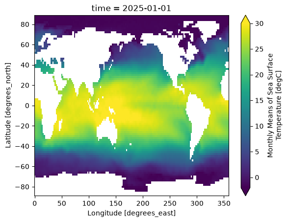
Note that xarray correctly parsed the time index, resulting in a Pandas datetime index on the time dimension.
noaa_sst.time
<xarray.DataArray 'time' (time: 792)> Size: 6kB
array(['1960-01-01T00:00:00.000000000', '1960-02-01T00:00:00.000000000',
'1960-03-01T00:00:00.000000000', ..., '2025-10-01T00:00:00.000000000',
'2025-11-01T00:00:00.000000000', '2025-12-01T00:00:00.000000000'],
shape=(792,), dtype='datetime64[ns]')
Coordinates:
* time (time) datetime64[ns] 6kB 1960-01-01 1960-02-01 ... 2025-12-01
Attributes:
long_name: Time
delta_t: 0000-01-00 00:00:00
avg_period: 0000-01-00 00:00:00
prev_avg_period: 0000-00-07 00:00:00
standard_name: time
axis: T
actual_range: [18262. 82757.]noaa_sst.sst.sel(lon=300, lat=50).plot()
plt.show()
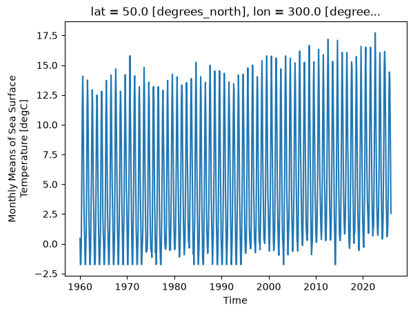
As we can see from the plot, the timeseries at any one point is totally dominated by the seasonal cycle. We would like to remove this seasonal cycle (called the “climatology”) in order to better see the long-term variaitions in temperature. We will accomplish this using groupby.
The syntax of xarray’s groupby is almost identical to pandas.
We will first apply groupby to a single DataArray.
7.3.1. Split Step#
The most important argument is group: this defines the unique values we will use to “split” the data for grouped analysis. We can pass either a DataArray or a name of a variable in the dataset. Lets first use a DataArray. Just like with pandas, we can use the time index to extract specific components of dates and times. xarray uses a special syntax for this .dt, called the DatetimeAccessor.
See a list of datatime properties you can access through .dt here
noaa_sst.time.dt
<xarray.core.accessor_dt.DatetimeAccessor at 0x175158810>
noaa_sst.time.dt.month
<xarray.DataArray 'month' (time: 792)> Size: 6kB
array([ 1, 2, 3, 4, 5, 6, 7, 8, 9, 10, 11, 12, 1, 2, 3, 4, 5,
6, 7, 8, 9, 10, 11, 12, 1, 2, 3, 4, 5, 6, 7, 8, 9, 10,
11, 12, 1, 2, 3, 4, 5, 6, 7, 8, 9, 10, 11, 12, 1, 2, 3,
4, 5, 6, 7, 8, 9, 10, 11, 12, 1, 2, 3, 4, 5, 6, 7, 8,
9, 10, 11, 12, 1, 2, 3, 4, 5, 6, 7, 8, 9, 10, 11, 12, 1,
2, 3, 4, 5, 6, 7, 8, 9, 10, 11, 12, 1, 2, 3, 4, 5, 6,
7, 8, 9, 10, 11, 12, 1, 2, 3, 4, 5, 6, 7, 8, 9, 10, 11,
12, 1, 2, 3, 4, 5, 6, 7, 8, 9, 10, 11, 12, 1, 2, 3, 4,
5, 6, 7, 8, 9, 10, 11, 12, 1, 2, 3, 4, 5, 6, 7, 8, 9,
10, 11, 12, 1, 2, 3, 4, 5, 6, 7, 8, 9, 10, 11, 12, 1, 2,
3, 4, 5, 6, 7, 8, 9, 10, 11, 12, 1, 2, 3, 4, 5, 6, 7,
8, 9, 10, 11, 12, 1, 2, 3, 4, 5, 6, 7, 8, 9, 10, 11, 12,
1, 2, 3, 4, 5, 6, 7, 8, 9, 10, 11, 12, 1, 2, 3, 4, 5,
6, 7, 8, 9, 10, 11, 12, 1, 2, 3, 4, 5, 6, 7, 8, 9, 10,
11, 12, 1, 2, 3, 4, 5, 6, 7, 8, 9, 10, 11, 12, 1, 2, 3,
4, 5, 6, 7, 8, 9, 10, 11, 12, 1, 2, 3, 4, 5, 6, 7, 8,
9, 10, 11, 12, 1, 2, 3, 4, 5, 6, 7, 8, 9, 10, 11, 12, 1,
2, 3, 4, 5, 6, 7, 8, 9, 10, 11, 12, 1, 2, 3, 4, 5, 6,
7, 8, 9, 10, 11, 12, 1, 2, 3, 4, 5, 6, 7, 8, 9, 10, 11,
12, 1, 2, 3, 4, 5, 6, 7, 8, 9, 10, 11, 12, 1, 2, 3, 4,
...
4, 5, 6, 7, 8, 9, 10, 11, 12, 1, 2, 3, 4, 5, 6, 7, 8,
9, 10, 11, 12, 1, 2, 3, 4, 5, 6, 7, 8, 9, 10, 11, 12, 1,
2, 3, 4, 5, 6, 7, 8, 9, 10, 11, 12, 1, 2, 3, 4, 5, 6,
7, 8, 9, 10, 11, 12, 1, 2, 3, 4, 5, 6, 7, 8, 9, 10, 11,
12, 1, 2, 3, 4, 5, 6, 7, 8, 9, 10, 11, 12, 1, 2, 3, 4,
5, 6, 7, 8, 9, 10, 11, 12, 1, 2, 3, 4, 5, 6, 7, 8, 9,
10, 11, 12, 1, 2, 3, 4, 5, 6, 7, 8, 9, 10, 11, 12, 1, 2,
3, 4, 5, 6, 7, 8, 9, 10, 11, 12, 1, 2, 3, 4, 5, 6, 7,
8, 9, 10, 11, 12, 1, 2, 3, 4, 5, 6, 7, 8, 9, 10, 11, 12,
1, 2, 3, 4, 5, 6, 7, 8, 9, 10, 11, 12, 1, 2, 3, 4, 5,
6, 7, 8, 9, 10, 11, 12, 1, 2, 3, 4, 5, 6, 7, 8, 9, 10,
11, 12, 1, 2, 3, 4, 5, 6, 7, 8, 9, 10, 11, 12, 1, 2, 3,
4, 5, 6, 7, 8, 9, 10, 11, 12, 1, 2, 3, 4, 5, 6, 7, 8,
9, 10, 11, 12, 1, 2, 3, 4, 5, 6, 7, 8, 9, 10, 11, 12, 1,
2, 3, 4, 5, 6, 7, 8, 9, 10, 11, 12, 1, 2, 3, 4, 5, 6,
7, 8, 9, 10, 11, 12, 1, 2, 3, 4, 5, 6, 7, 8, 9, 10, 11,
12, 1, 2, 3, 4, 5, 6, 7, 8, 9, 10, 11, 12, 1, 2, 3, 4,
5, 6, 7, 8, 9, 10, 11, 12, 1, 2, 3, 4, 5, 6, 7, 8, 9,
10, 11, 12, 1, 2, 3, 4, 5, 6, 7, 8, 9, 10, 11, 12, 1, 2,
3, 4, 5, 6, 7, 8, 9, 10, 11, 12])
Coordinates:
* time (time) datetime64[ns] 6kB 1960-01-01 1960-02-01 ... 2025-12-01
Attributes:
long_name: Time
delta_t: 0000-01-00 00:00:00
avg_period: 0000-01-00 00:00:00
prev_avg_period: 0000-00-07 00:00:00
standard_name: time
axis: T
actual_range: [18262. 82757.]noaa_sst.time.dt.year
<xarray.DataArray 'year' (time: 792)> Size: 6kB
array([1960, 1960, 1960, 1960, 1960, 1960, 1960, 1960, 1960, 1960, 1960,
1960, 1961, 1961, 1961, 1961, 1961, 1961, 1961, 1961, 1961, 1961,
1961, 1961, 1962, 1962, 1962, 1962, 1962, 1962, 1962, 1962, 1962,
1962, 1962, 1962, 1963, 1963, 1963, 1963, 1963, 1963, 1963, 1963,
1963, 1963, 1963, 1963, 1964, 1964, 1964, 1964, 1964, 1964, 1964,
1964, 1964, 1964, 1964, 1964, 1965, 1965, 1965, 1965, 1965, 1965,
1965, 1965, 1965, 1965, 1965, 1965, 1966, 1966, 1966, 1966, 1966,
1966, 1966, 1966, 1966, 1966, 1966, 1966, 1967, 1967, 1967, 1967,
1967, 1967, 1967, 1967, 1967, 1967, 1967, 1967, 1968, 1968, 1968,
1968, 1968, 1968, 1968, 1968, 1968, 1968, 1968, 1968, 1969, 1969,
1969, 1969, 1969, 1969, 1969, 1969, 1969, 1969, 1969, 1969, 1970,
1970, 1970, 1970, 1970, 1970, 1970, 1970, 1970, 1970, 1970, 1970,
1971, 1971, 1971, 1971, 1971, 1971, 1971, 1971, 1971, 1971, 1971,
1971, 1972, 1972, 1972, 1972, 1972, 1972, 1972, 1972, 1972, 1972,
1972, 1972, 1973, 1973, 1973, 1973, 1973, 1973, 1973, 1973, 1973,
1973, 1973, 1973, 1974, 1974, 1974, 1974, 1974, 1974, 1974, 1974,
1974, 1974, 1974, 1974, 1975, 1975, 1975, 1975, 1975, 1975, 1975,
1975, 1975, 1975, 1975, 1975, 1976, 1976, 1976, 1976, 1976, 1976,
1976, 1976, 1976, 1976, 1976, 1976, 1977, 1977, 1977, 1977, 1977,
1977, 1977, 1977, 1977, 1977, 1977, 1977, 1978, 1978, 1978, 1978,
...
2007, 2007, 2007, 2007, 2008, 2008, 2008, 2008, 2008, 2008, 2008,
2008, 2008, 2008, 2008, 2008, 2009, 2009, 2009, 2009, 2009, 2009,
2009, 2009, 2009, 2009, 2009, 2009, 2010, 2010, 2010, 2010, 2010,
2010, 2010, 2010, 2010, 2010, 2010, 2010, 2011, 2011, 2011, 2011,
2011, 2011, 2011, 2011, 2011, 2011, 2011, 2011, 2012, 2012, 2012,
2012, 2012, 2012, 2012, 2012, 2012, 2012, 2012, 2012, 2013, 2013,
2013, 2013, 2013, 2013, 2013, 2013, 2013, 2013, 2013, 2013, 2014,
2014, 2014, 2014, 2014, 2014, 2014, 2014, 2014, 2014, 2014, 2014,
2015, 2015, 2015, 2015, 2015, 2015, 2015, 2015, 2015, 2015, 2015,
2015, 2016, 2016, 2016, 2016, 2016, 2016, 2016, 2016, 2016, 2016,
2016, 2016, 2017, 2017, 2017, 2017, 2017, 2017, 2017, 2017, 2017,
2017, 2017, 2017, 2018, 2018, 2018, 2018, 2018, 2018, 2018, 2018,
2018, 2018, 2018, 2018, 2019, 2019, 2019, 2019, 2019, 2019, 2019,
2019, 2019, 2019, 2019, 2019, 2020, 2020, 2020, 2020, 2020, 2020,
2020, 2020, 2020, 2020, 2020, 2020, 2021, 2021, 2021, 2021, 2021,
2021, 2021, 2021, 2021, 2021, 2021, 2021, 2022, 2022, 2022, 2022,
2022, 2022, 2022, 2022, 2022, 2022, 2022, 2022, 2023, 2023, 2023,
2023, 2023, 2023, 2023, 2023, 2023, 2023, 2023, 2023, 2024, 2024,
2024, 2024, 2024, 2024, 2024, 2024, 2024, 2024, 2024, 2024, 2025,
2025, 2025, 2025, 2025, 2025, 2025, 2025, 2025, 2025, 2025, 2025])
Coordinates:
* time (time) datetime64[ns] 6kB 1960-01-01 1960-02-01 ... 2025-12-01
Attributes:
long_name: Time
delta_t: 0000-01-00 00:00:00
avg_period: 0000-01-00 00:00:00
prev_avg_period: 0000-00-07 00:00:00
standard_name: time
axis: T
actual_range: [18262. 82757.]We can use these arrays in a groupby operation:
gb = noaa_sst.sst.groupby(noaa_sst.time.dt.month)
gb
<DataArrayGroupBy, grouped over 1 grouper(s), 12 groups in total:
'month': UniqueGrouper('month'), 12/12 groups with labels 1, 2, 3, 4, 5, 6, 7, 8, 9, 10, 11, 12>
xarray also offers a more concise syntax when the variable you’re grouping on is already present in the dataset. This is identical to the previous line:
gb = noaa_sst.sst.groupby('time.month')
gb
<DataArrayGroupBy, grouped over 1 grouper(s), 12 groups in total:
'month': UniqueGrouper('month'), 12/12 groups with labels 1, 2, 3, 4, 5, 6, 7, 8, 9, 10, 11, 12>
Now that the data are split, we can manually iterate over the group. The iterator returns the key (group name) and the value (the actual dataset corresponding to that group) for each group.
for group_name, group_da in gb:
print(group_name) # stop after first iteration
break
group_da
1
<xarray.DataArray 'sst' (time: 66, lat: 89, lon: 180)> Size: 4MB
[1057320 values with dtype=float32]
Coordinates:
* time (time) datetime64[ns] 528B 1960-01-01 1961-01-01 ... 2025-01-01
* lat (lat) float32 356B 88.0 86.0 84.0 82.0 ... -82.0 -84.0 -86.0 -88.0
* lon (lon) float32 720B 0.0 2.0 4.0 6.0 8.0 ... 352.0 354.0 356.0 358.0
Attributes:
long_name: Monthly Means of Sea Surface Temperature
units: degC
var_desc: Sea Surface Temperature
level_desc: Surface
statistic: Mean
parent_stat: Individual Values
valid_range: [-1.8 45. ]
actual_range: [-2.2655034 42.32636 ]
dataset: NOAA Extended Reconstructed SST V67.3.2. Map & Combine#
Now that we have groups defined, it’s time to “apply” a calculation to the group. Like in pandas, these calculations can either be:
aggregation: reduces the size of the group
transformation: preserves the group’s full size
At then end of the apply step, xarray will automatically combine the aggregated / transformed groups back into a single object.
Warning
Xarray calls the “apply” step map. This is different from Pandas!
gb.map?
Signature:
gb.map(
func: 'Callable[..., DataArray]',
args: 'tuple[Any, ...]' = (),
shortcut: 'bool | None' = None,
**kwargs: 'Any',
) -> 'DataArray'
Docstring:
Apply a function to each array in the group and concatenate them
together into a new array.
`func` is called like `func(ar, *args, **kwargs)` for each array `ar`
in this group.
Apply uses heuristics (like `pandas.GroupBy.apply`) to figure out how
to stack together the array. The rule is:
1. If the dimension along which the group coordinate is defined is
still in the first grouped array after applying `func`, then stack
over this dimension.
2. Otherwise, stack over the new dimension given by name of this
grouping (the argument to the `groupby` function).
Parameters
----------
func : callable
Callable to apply to each array.
shortcut : bool, optional
Whether or not to shortcut evaluation under the assumptions that:
(1) The action of `func` does not depend on any of the array
metadata (attributes or coordinates) but only on the data and
dimensions.
(2) The action of `func` creates arrays with homogeneous metadata,
that is, with the same dimensions and attributes.
If these conditions are satisfied `shortcut` provides significant
speedup. This should be the case for many common groupby operations
(e.g., applying numpy ufuncs).
*args : tuple, optional
Positional arguments passed to `func`.
**kwargs
Used to call `func(ar, **kwargs)` for each array `ar`.
Returns
-------
applied : DataArray
The result of splitting, applying and combining this array.
File: ~/Desktop/xarray-tutorial/.pixi/envs/default/lib/python3.13/site-packages/xarray/core/groupby.py
Type: method
7.3.2.1. Aggregations#
Like pandas, xarray’s groupby object has many built-in aggregation operations (e.g. mean, min, max, std, etc):
sst_mm = gb.mean(dim='time')
sst_mm
<xarray.DataArray 'sst' (month: 12, lat: 89, lon: 180)> Size: 769kB
array([[[-1.7704183, -1.7429352, -1.7334596, ..., -1.7583696,
-1.7611848, -1.7661368],
[-1.7474002, -1.72093 , -1.7083223, ..., -1.6872082,
-1.679056 , -1.7087934],
[-1.7070372, -1.6970297, -1.717903 , ..., -1.7212163,
-1.7391362, -1.739069 ],
...,
[ nan, nan, nan, ..., nan,
nan, nan],
[ nan, nan, nan, ..., nan,
nan, nan],
[ nan, nan, nan, ..., nan,
nan, nan]],
[[-1.7687984, -1.7444975, -1.7376387, ..., -1.7793446,
-1.7700444, -1.7667769],
[-1.7611471, -1.7221469, -1.7059942, ..., -1.7024916,
-1.6803567, -1.7156144],
[-1.7125304, -1.6979598, -1.7094287, ..., -1.7250212,
-1.739435 , -1.7409368],
...
[ nan, nan, nan, ..., nan,
nan, nan],
[ nan, nan, nan, ..., nan,
nan, nan],
[ nan, nan, nan, ..., nan,
nan, nan]],
[[-1.7231394, -1.6888553, -1.6701957, ..., -1.7321169,
-1.7216377, -1.7196321],
[-1.6872448, -1.674 , -1.6818368, ..., -1.6700076,
-1.6486129, -1.6574895],
[-1.6927167, -1.6861418, -1.7194597, ..., -1.7171193,
-1.7197195, -1.7169719],
...,
[ nan, nan, nan, ..., nan,
nan, nan],
[ nan, nan, nan, ..., nan,
nan, nan],
[ nan, nan, nan, ..., nan,
nan, nan]]], shape=(12, 89, 180), dtype=float32)
Coordinates:
* month (month) int64 96B 1 2 3 4 5 6 7 8 9 10 11 12
* lat (lat) float32 356B 88.0 86.0 84.0 82.0 ... -82.0 -84.0 -86.0 -88.0
* lon (lon) float32 720B 0.0 2.0 4.0 6.0 8.0 ... 352.0 354.0 356.0 358.0
Attributes:
long_name: Monthly Means of Sea Surface Temperature
units: degC
var_desc: Sea Surface Temperature
level_desc: Surface
statistic: Mean
parent_stat: Individual Values
valid_range: [-1.8 45. ]
actual_range: [-2.2655034 42.32636 ]
dataset: NOAA Extended Reconstructed SST V6.map accepts as its argument a function. We can pass an existing function:
gb.map(np.mean)
<xarray.DataArray 'sst' (month: 12)> Size: 48B
array([13.628319 , 13.7344055, 13.726181 , 13.641603 , 13.591497 ,
13.660077 , 13.876824 , 14.041093 , 13.923461 , 13.645469 ,
13.463244 , 13.489468 ], dtype=float32)
Coordinates:
* month (month) int64 96B 1 2 3 4 5 6 7 8 9 10 11 12
Attributes:
long_name: Monthly Means of Sea Surface Temperature
units: degC
var_desc: Sea Surface Temperature
level_desc: Surface
statistic: Mean
parent_stat: Individual Values
valid_range: [-1.8 45. ]
actual_range: [-2.2655034 42.32636 ]
dataset: NOAA Extended Reconstructed SST V6Because we specified no extra arguments (like axis) the function was applied over all space and time dimensions. This is not what we wanted. Instead, we could define a custom function. This function takes a single argument –the group dataset– and returns a new dataset to be combined:
def time_mean(a):
return a.mean(dim='time')
sst_mm = gb.map(time_mean)
sst_mm
<xarray.DataArray 'sst' (month: 12, lat: 89, lon: 180)> Size: 769kB
array([[[-1.7704183, -1.7429352, -1.7334596, ..., -1.7583696,
-1.7611848, -1.7661368],
[-1.7474002, -1.72093 , -1.7083223, ..., -1.6872082,
-1.679056 , -1.7087934],
[-1.7070372, -1.6970297, -1.717903 , ..., -1.7212163,
-1.7391362, -1.739069 ],
...,
[ nan, nan, nan, ..., nan,
nan, nan],
[ nan, nan, nan, ..., nan,
nan, nan],
[ nan, nan, nan, ..., nan,
nan, nan]],
[[-1.7687984, -1.7444975, -1.7376387, ..., -1.7793446,
-1.7700444, -1.7667769],
[-1.7611471, -1.7221469, -1.7059942, ..., -1.7024916,
-1.6803567, -1.7156144],
[-1.7125304, -1.6979598, -1.7094287, ..., -1.7250212,
-1.739435 , -1.7409368],
...
[ nan, nan, nan, ..., nan,
nan, nan],
[ nan, nan, nan, ..., nan,
nan, nan],
[ nan, nan, nan, ..., nan,
nan, nan]],
[[-1.7231394, -1.6888553, -1.6701957, ..., -1.7321169,
-1.7216377, -1.7196321],
[-1.6872448, -1.674 , -1.6818368, ..., -1.6700076,
-1.6486129, -1.6574895],
[-1.6927167, -1.6861418, -1.7194597, ..., -1.7171193,
-1.7197195, -1.7169719],
...,
[ nan, nan, nan, ..., nan,
nan, nan],
[ nan, nan, nan, ..., nan,
nan, nan],
[ nan, nan, nan, ..., nan,
nan, nan]]], shape=(12, 89, 180), dtype=float32)
Coordinates:
* month (month) int64 96B 1 2 3 4 5 6 7 8 9 10 11 12
* lat (lat) float32 356B 88.0 86.0 84.0 82.0 ... -82.0 -84.0 -86.0 -88.0
* lon (lon) float32 720B 0.0 2.0 4.0 6.0 8.0 ... 352.0 354.0 356.0 358.0
Attributes:
long_name: Monthly Means of Sea Surface Temperature
units: degC
var_desc: Sea Surface Temperature
level_desc: Surface
statistic: Mean
parent_stat: Individual Values
valid_range: [-1.8 45. ]
actual_range: [-2.2655034 42.32636 ]
dataset: NOAA Extended Reconstructed SST V6So we did what we wanted to do: calculate the climatology at every point in the dataset. Let’s look at the data a bit.
Climatlogy at a specific point in the North Atlantic
sst_mm.sel(lon=300, lat=-50).plot()
plt.show()
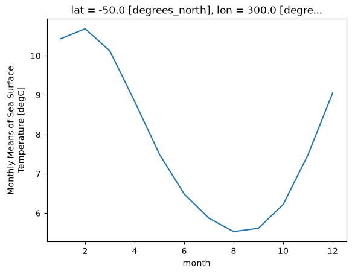
Zonal Mean Climatology
sst_mm.mean(dim='lon').transpose().plot.contourf(levels=12, vmin=-2, vmax=30)
plt.show()
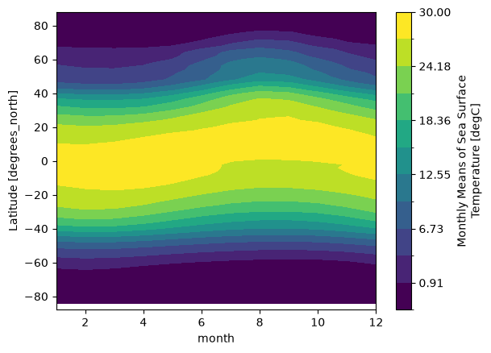
Difference between January and July Climatology
(sst_mm.sel(month=1) - sst_mm.sel(month=7)).plot(vmax=10)
plt.show()
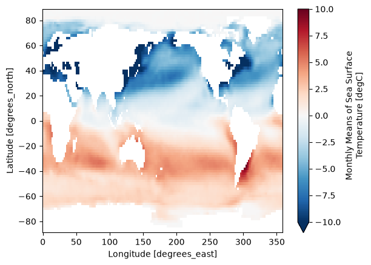
7.3.2.2. Transformations#
Now we want to remove this climatology from the dataset, to examine the residual, called the anomaly, which is the interesting part from a climate perspective. Removing the seasonal climatology is a perfect example of a transformation: it operates over a group, but doesn’t change the size of the dataset. Here is one way to code it.
def remove_time_mean(x):
return x - x.mean(dim='time')
ds_anom = noaa_sst.groupby('time.month').map(remove_time_mean)
ds_anom
<xarray.Dataset> Size: 51MB
Dimensions: (time: 792, lat: 89, lon: 180)
Coordinates:
* time (time) datetime64[ns] 6kB 1960-01-01 1960-02-01 ... 2025-12-01
* lat (lat) float32 356B 88.0 86.0 84.0 82.0 ... -82.0 -84.0 -86.0 -88.0
* lon (lon) float32 720B 0.0 2.0 4.0 6.0 8.0 ... 352.0 354.0 356.0 358.0
Data variables:
sst (time, lat, lon) float32 51MB -1.669e-06 0.0 -5.96e-07 ... nan nan
Attributes: (12/39)
climatology: Climatology is based on 1971-2000 SST, Xue, Y....
description: In situ data: ICOADS2.5 before 2007 and NCEP i...
keywords_vocabulary: NASA Global Change Master Directory (GCMD) Sci...
keywords: Earth Science > Oceans > Ocean Temperature > S...
instrument: Conventional thermometers
source_comment: SSTs were observed by conventional thermometer...
... ...
product_version: Version 6
history: created 01/16/2025 by PSL using NCEI ERSST V6 ...
References: https://www.ncdc.noaa.gov/data-access/marineoc...
summary: ERSSTv6 is developped based on v5, by replacin...
comments: SSTs were observed by conventional thermometer...
platform: Ship and Buoy SSTs from ICOADS R3.0.2 and Argo...Note
In the above example, we applied groupby to a Dataset instead of a DataArray.
Xarray makes these sorts of transformations easy by supporting groupby arithmetic. This concept is easiest explained with an example:
gb = noaa_sst.groupby('time.month')
ds_anom = gb - gb.mean(dim='time')
ds_anom
<xarray.Dataset> Size: 51MB
Dimensions: (lat: 89, lon: 180, time: 792)
Coordinates:
* lat (lat) float32 356B 88.0 86.0 84.0 82.0 ... -82.0 -84.0 -86.0 -88.0
* lon (lon) float32 720B 0.0 2.0 4.0 6.0 8.0 ... 352.0 354.0 356.0 358.0
* time (time) datetime64[ns] 6kB 1960-01-01 1960-02-01 ... 2025-12-01
month (time) int64 6kB 1 2 3 4 5 6 7 8 9 10 11 ... 3 4 5 6 7 8 9 10 11 12
Data variables:
sst (time, lat, lon) float32 51MB -1.669e-06 0.0 -5.96e-07 ... nan nan
Attributes: (12/39)
climatology: Climatology is based on 1971-2000 SST, Xue, Y....
description: In situ data: ICOADS2.5 before 2007 and NCEP i...
keywords_vocabulary: NASA Global Change Master Directory (GCMD) Sci...
keywords: Earth Science > Oceans > Ocean Temperature > S...
instrument: Conventional thermometers
source_comment: SSTs were observed by conventional thermometer...
... ...
product_version: Version 6
history: created 01/16/2025 by PSL using NCEI ERSST V6 ...
References: https://www.ncdc.noaa.gov/data-access/marineoc...
summary: ERSSTv6 is developped based on v5, by replacin...
comments: SSTs were observed by conventional thermometer...
platform: Ship and Buoy SSTs from ICOADS R3.0.2 and Argo...Now we can view the climate signal without the overwhelming influence of the seasonal cycle.
Timeseries at a single point in the North Atlantic
ds_anom.sst.sel(lon=300, lat=50).plot()
plt.show()
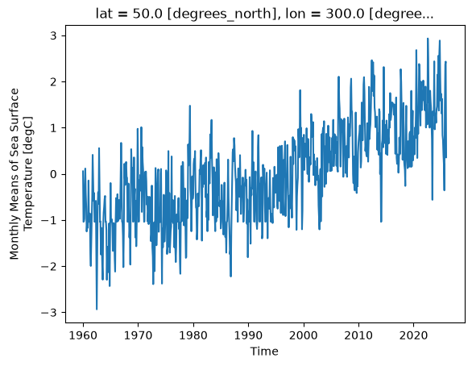
Difference between Jan. 1 2024 and Jan. 1 1960
(ds_anom.sel(time='2024-01-01') - ds_anom.sel(time='1960-01-01')).sst.plot()
plt.show()
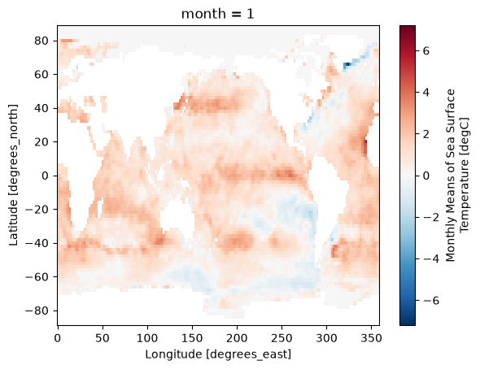
7.5. Coarsen#
Coarsen is a simple way to reduce the size of your data along one or more axes.
It is very similar to resample when operating on time dimensions; the key difference is that coarsen only operates on fixed blocks of data, irrespective of the coordinate values, while resample actually looks at the coordinates to figure out, e.g. what month a particular data point is in.
For regularly-spaced monthly data beginning in January, the following should be equivalent to annual resampling. However, results would be different for irregularly-spaced data.
noaa_sst.coarsen(time=12, boundary = 'exact').mean()
<xarray.Dataset> Size: 4MB
Dimensions: (time: 66, lat: 89, lon: 180)
Coordinates:
* time (time) datetime64[ns] 528B 1960-06-16T08:00:00 ... 2025-06-16T12...
* lat (lat) float32 356B 88.0 86.0 84.0 82.0 ... -82.0 -84.0 -86.0 -88.0
* lon (lon) float32 720B 0.0 2.0 4.0 6.0 8.0 ... 352.0 354.0 356.0 358.0
Data variables:
sst (time, lat, lon) float32 4MB -1.76 -1.737 -1.732 ... nan nan nan
Attributes: (12/39)
climatology: Climatology is based on 1971-2000 SST, Xue, Y....
description: In situ data: ICOADS2.5 before 2007 and NCEP i...
keywords_vocabulary: NASA Global Change Master Directory (GCMD) Sci...
keywords: Earth Science > Oceans > Ocean Temperature > S...
instrument: Conventional thermometers
source_comment: SSTs were observed by conventional thermometer...
... ...
product_version: Version 6
history: created 01/16/2025 by PSL using NCEI ERSST V6 ...
References: https://www.ncdc.noaa.gov/data-access/marineoc...
summary: ERSSTv6 is developped based on v5, by replacin...
comments: SSTs were observed by conventional thermometer...
platform: Ship and Buoy SSTs from ICOADS R3.0.2 and Argo...Coarsen also works on spatial coordinates (or any coordiantes).
fig, ax = plt.subplots(figsize=(12, 5))
ds_coarse = noaa_sst.coarsen(lon=4, lat=4, boundary='pad').mean()
ds_coarse.sst.isel(time=0).plot(ax=ax, vmin=2, vmax=30, edgecolor='k')
plt.show()
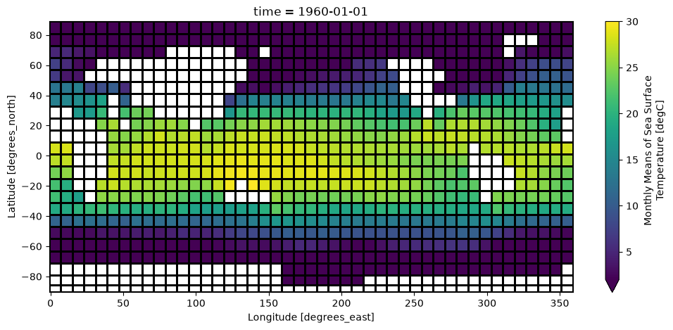